<!DOCTYPE html>
<html>
    <head>
     <meta charset="UTF-8">
     <title>Guessing & Choice Game</title>
     <script src="js/jspsych-6.2.0/jspsych.js"></script>
     <script src="js/jspsych-6.2.0/plugins/jspsych-fullscreen.js"></script>
     <script src="js/jspsych-6.2.0/plugins/jspsych-instructions.js"></script>
     <script src="js/jspsych-6.2.0/plugins/jspsych-html-slider-response.js"></script>
     <script src="js/jspsych-6.2.0/plugins/jspsych-survey-text.js"></script>
     <script src="js/jspsych-6.2.0/plugins/jspsych-survey-likert.js"></script>
     <script src="js/jspsych-6.2.0/plugins/jspsych-survey-multi-choice.js"></script>
     <script src="js/jspsych-6.2.0/plugins/jspsych-html-keyboard-response.js"></script>
     <script src="js/jspsych-6.2.0/plugins/jspsych-html-slider-response.js"></script>
     <script src="js/jquery-1.7.1.min.js"></script> <!-- the jquery library is used to communicate with the server (to store the data) through "AJAX" and PHP -->
     <script src="js/bowser.js"></script>
     <link href="js/jspsych-6.2.0/css/jspsych.css" rel="stylesheet" type="text/css"></link>
     <link href="configurations/custom.css" rel="stylesheet" type="text/css"></link> <!-- custom css code -->

    </head>
    <body></body>
    <script>

      /*********************************************
            Some general notes on the code
      *********************************************/
      /*
      Author:  Zhang Chen <Zhang.Chen@UGent.be> & Ymke Verduyn <Ymke.Verduyn@UGent.be>
      Time: December, 2021

      Participants in this experiment will receive the task for a fixed duration,
      rather than for a fixed number of trials (as most cognitive experiments do).

      To implement this in jsPsych, we reply on the time_elapsed variable, which is
      returned by all plugins. The time_elapsed variable stands for "the number
      of milliseconds between the start of the experiment and when the trial ended."

      Briefly, at the beginning of a block, we get the value of the time_elapsed
      variable, which is the 'clock time' for when we start a block. Based on how long
      we want a block to last, we can accordingly compute what the 'clock time'
      should be when the block ends. After each trial, we check what the current
      time is and compute the remaining time.

      Each trial is put into its respective if node, and the if node is only executed
      if the remaining time is still > 0. In other words, when the remaining time <= 0,
      the trial will not be executed any more. All the if nodes are put into another loop,
      which continues looping through the trials as long as the remaining time is > 0.
      When there is no time left, the loop is ended and the script informs participants
      that their time is up for the current block.

      Another change that we need to implement (compared to our other scripts)
      is that since the task can be interrupted at any moment when partcipants
      run out of time, instead of registering data at the end of a trial,
      we now register data immediately after each response.

      In the script below, we provide more detailed comments for the relevant parts.

      */


      /*********************************************
            Global experimental parameters
      *********************************************/

      // Here we define some global variables to keep track of information

      // is the experiment running from a server or not? (this determines if data is saved on server or offline)
      if (document.location.host) { // returns your host or null
        var online = true;
      } else {
        var online = false;
      };

      /* all images and audios used in the experiment */
      var instruct_images = ['Instructions/Slide1.png', 'Instructions/Slide2.png', 'Instructions/Slide3.png', 'Instructions/Slide4.png',
                             'Instructions/Slide5.png', 'Instructions/Slide6.png', 'Instructions/Slide7.png', 'Instructions/Slide8.png',
                             'Instructions/Slide9.png', 'Instructions/Slide10.png', 'Instructions/Slide11.png', 'Instructions/Slide12.png'];

      var all_images = ['images/blue.png', 'images/yellow.png', 'images/mixed.png', 'images/blue_F.png', 'images/yellow_J.png'];

      all_images = all_images.concat(instruct_images);

      var all_audios = ['card_flip.mp3', 'cash_sound.wav'];

      var timeline = []; // an empty timeline variable

      var Nblock = 6; // the number of blocks
      var block_duration = 8; // the duration of one block, in minutes
      var block_number = 0;
      var trial_number = 0;
      var trial_type; // the current trial type, 'guess' or 'ITC'.
      var stage; // which stage of the experiment do the data belong to?
      var respRT; // variable for tracking the RT of each response
      var respKey; // variable for tracking which key is pressed
      var blur_count; // how many times participants leave the current page
      var focus_count; // how many times participants enter the current page

      // parameters for presenting a block for a fixed duration
      var time_start; // when do participants start a block? In milliseconds since experiment starts
      var time_end; // when is a block supposed to end? In milliseconds since experiment starts
      var time_now; // the current time, in milliseconds since experiment starts
      var total_duration = block_duration * 60 * 1000; // the total duration of a block, in milliseconds
      var remaining_duration; // the remaining duration of a block, in milliseconds

      // parameters for the guessing game
      var guess_startRT; // how quickly participants start the guessing game, in ms
      var guess_choiceRT; // how quickly participants make a choice, in ms
      var guess_choiceKey; // which key participants select, F or J.
      var guess_outcome; // the outcome of the guessing game
      var guess_text_instruction; // the text message in the guessing game
      var guess_option_states;
      var guess_color_front;
      var guess_color_back;
      var guess_outcome_message;

      var total_points = 0; // the total number of points (e.g. in cents) so far

      // parameters for the intertemporal choice game

      var delay_time; // the wait period for the delayed option, in seconds
      var immediate_amount; // the current immediate amount, in cents.
      var delay_pos; // whether the delayed option is on the left or right
      var left_time, left_amount, right_time, right_amount; // the time and amount of the two options

      var IT_startRT; // how quickly a participant starts an intertemporal choice trial
      var IT_choiceRT;  // how quickly a participant chooses an option
      var IT_choiceKey; // which key a participant selects to make a choice, F or J
      var IT_choice; // the choice a participant makes, 'immediate' or 'delayed'

      var chosen_wait_time; // the duration of the wait time that participants choose, in milliseconds
      var chosen_amount; // the amount of the chosen option
      var IT_collectRT; // how quickly a participant collects the reward, in ms

      /*********************************************
              Create experimental trials
      *********************************************/

      /*
      Here we create experimental trials for all blocks.
      Since we do not know in advance how many trials a certain participant
      will do within a certain block, our strategy is to create a very large
      number of trials so that participants cannot possibly finish all trials.
      */

      // in the experiment, we use three delay levels, 5, 15 and 30 seconds.
      // These delayed options will be mapped to different immediate amounts,
      // to increase the chance that we can capture the indifference points.

      // when the delay is 5 seconds, the immediate amount varies from 1 till 16 cents
      var factors_delay5 = {
        guess_outcome: ['win', 'loss', 'neutral'],
        delay_time: [5],
        immediate_amount: [1, 2, 3, 4, 5, 6, 7, 8, 9, 10, 11, 12, 13, 14, 15, 16]
      };

      var trials_delay5 = jsPsych.randomization.factorial(factors_delay5, 1);

      // when the delay is 10 seconds, the immediate amount varies from 1 till 8 cents
      var factors_delay10 = {
        guess_outcome: ['win', 'loss', 'neutral'],
        delay_time: [10],
        immediate_amount: [1, 2, 3, 4, 5, 6, 7, 8]
      };

      var trials_delay10 = jsPsych.randomization.factorial(factors_delay10, 1);

      // put all three types of trials into one array
      var full_design = trials_delay5.concat(trials_delay10);

      // create many trials that participants cannot possibly finish within the fixed duration
      var trials = [];

      for (var i = 0; i < 100; i++) {

        full_design = jsPsych.randomization.shuffle(full_design);
        trials = trials.concat(full_design);
      }

      /********************************************************
      Informed consent and demographic information
      ********************************************************/

      /*********** welcome message ***********/
      // End the experiment if browser is not Chrome or Firefox

      var welcome_message = ['<p>Welcome to the experiment.</p>' + '<p>Press "Next" to begin.</p>'];
      var not_supported_message = ['<p>This experiment requires the Chrome or Firefox webbrowser.</p>'];

      var welcome = {
        type: "instructions",
        pages: welcome_message,
        show_clickable_nav: true,
        button_label_next: "Next",
        on_start: function(trial){
          if (bowser.name == 'Firefox' || bowser.name == 'Chrome'){
            trial.pages = welcome_message;
          } else {
            trial.pages = not_supported_message;
            setTimeout(function(){location.href="html/not_supported.html"}, 2000);
          }
        }
      };

      /*********** informed consent ***********/
      var consent = {
        type: 'instructions',
        pages: ['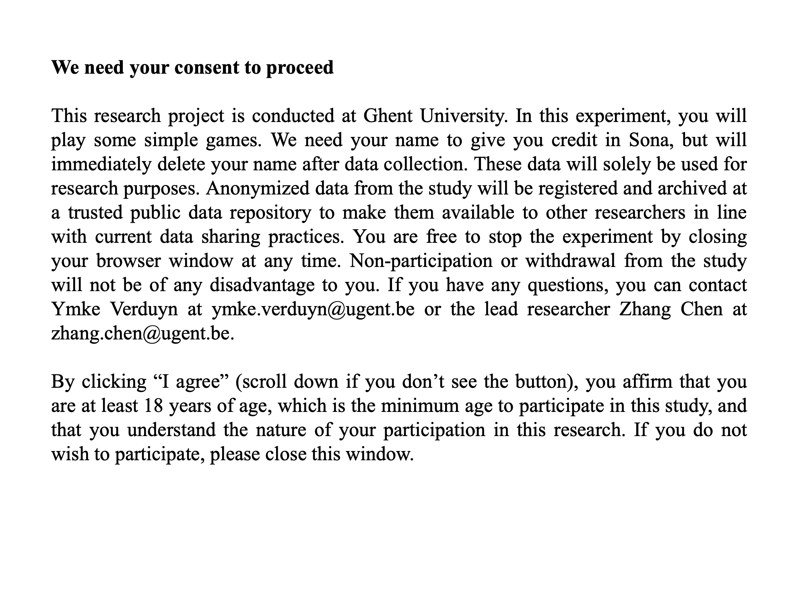</img>'],
        show_clickable_nav: true,
        button_label_next: "I agree",
        allow_backward: false
      };


      /*********** Adjust volume ***********/

      var adjust_volume = {
        type: 'html-keyboard-response',
        stimulus: '<p>This experiment contains some sound effects. Turn on your speaker and adjust the volume of your speaker to a comfortable level. <br><br>You can test the sound below. Press J to continue once you are ready.</p><audio controls src="card_flip.mp3"></audio>',
        choices: ['j']
      }


      /*********** prolific ID ***********/

      var prolific = {
        type: 'survey-text',
        questions: [
          {prompt: "Enter your name. <br> We need your name to give you credit in Sona.", required: true}],
        on_finish: function(data) {
          // get prolific ID
          var responses = JSON.parse(data.responses);
          var prolific_ID = responses.Q0;

          // add prolific_ID to jsPsych data
          jsPsych.data.addProperties({
            prolific_ID: prolific_ID,
          });
        }
      };

      /*********** fullscreen mode ***********/

      var fullscreen_mode = {
        type: 'fullscreen',
        fullscreen_mode: true
      };

      /*********** demographic info ***********/

      // get age and nationality
      var age_nationality = {
        type: 'survey-text',
        questions: [
          {prompt: "Please enter your age", required: true},
          {prompt: "Please enter your nationality", required: true}],
        on_finish: function(data) {
          var responses = JSON.parse(data.responses);
          var age = responses.Q0;
          var nationality = responses.Q1;
          jsPsych.data.addProperties({
            age: age,
            nationality: nationality
          });
        }
      };

      // get participant's gender
      var gender = {
        type: 'survey-multi-choice',
        questions: [{
          prompt: "Please enter your gender",
          options: ["male", "female", "non-binary", "I don't want to say"],
          required: true
        }],
        on_finish: function(data) {
          var responses = JSON.parse(data.responses);
          var gender = responses.Q0;
          jsPsych.data.addProperties({
            gender: gender
          });
        }
      };

      // informed consent and demographic information
      var consent_demo = [welcome, consent, adjust_volume, prolific, fullscreen_mode, age_nationality, gender];

      /*********************************************
                Instruction pages
      *********************************************/

      var game_instructions = {
        type: 'instructions',
        pages: ['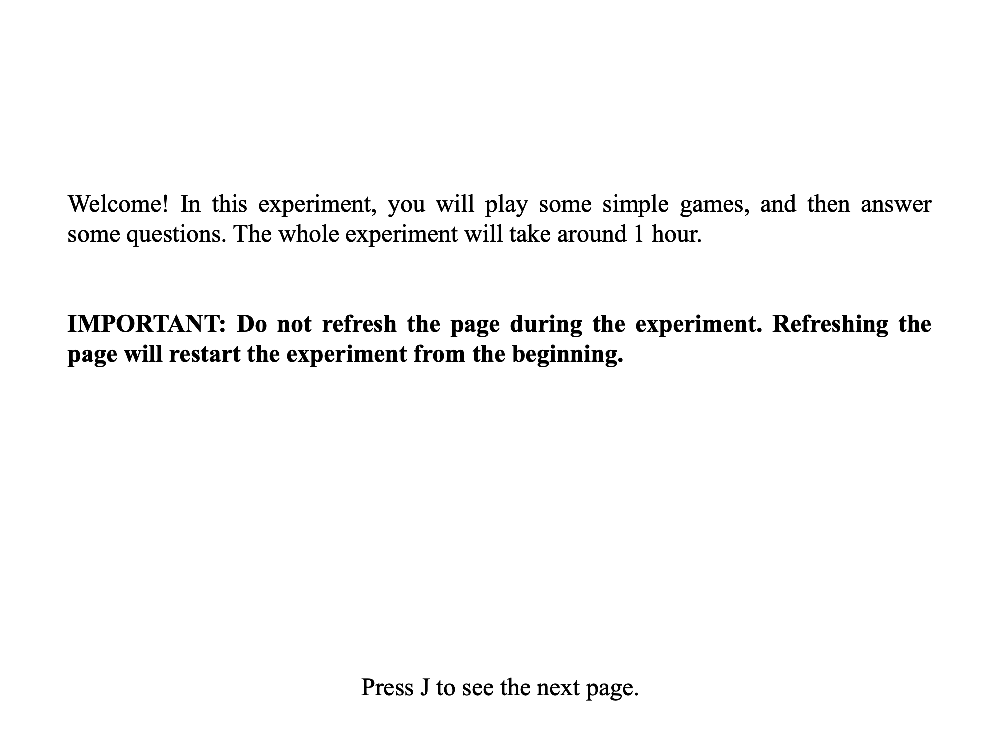</img>',
                '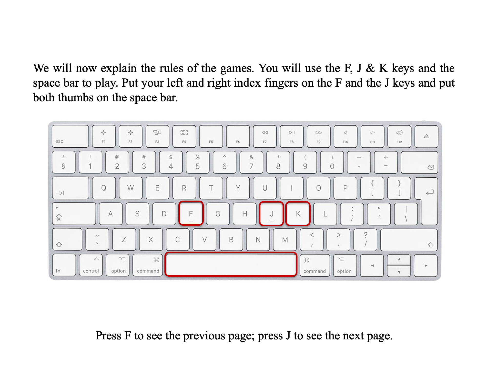</img>',
                '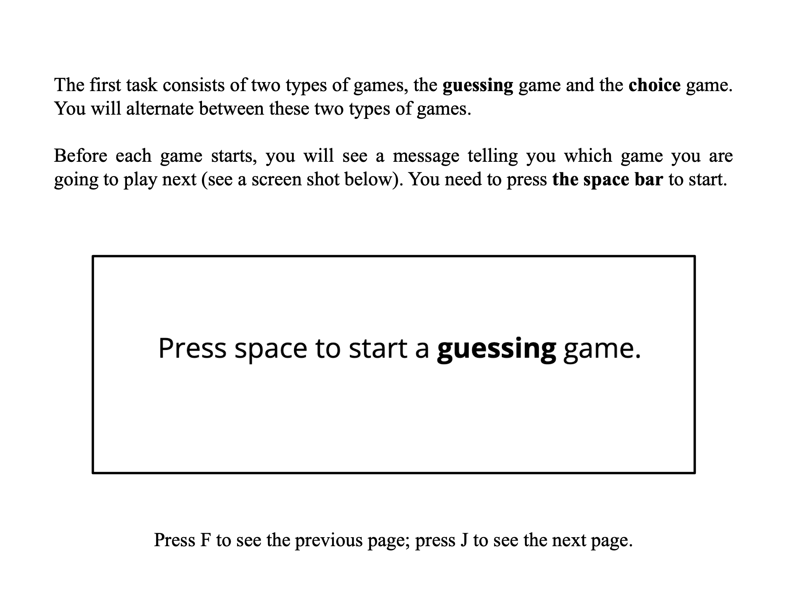</img>',
                '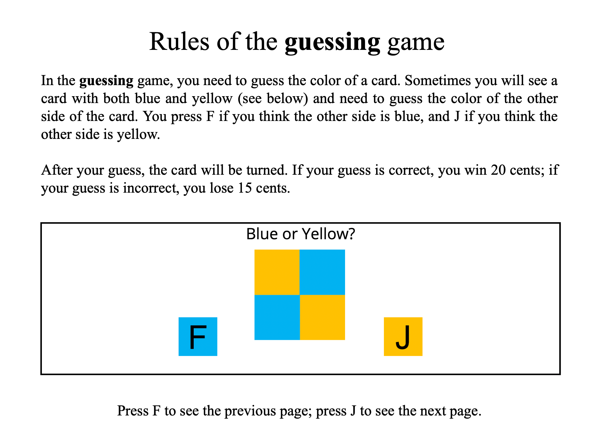</img>',
                '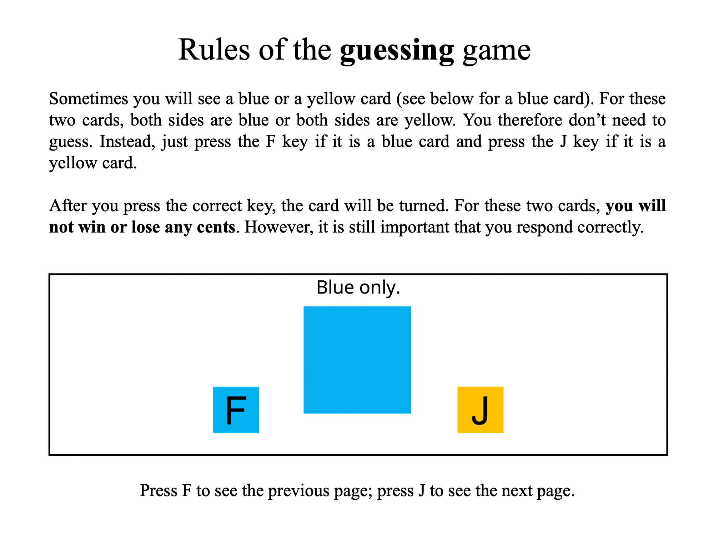</img>',
                '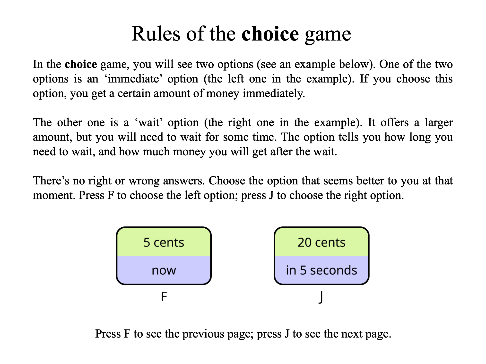</img>',
                '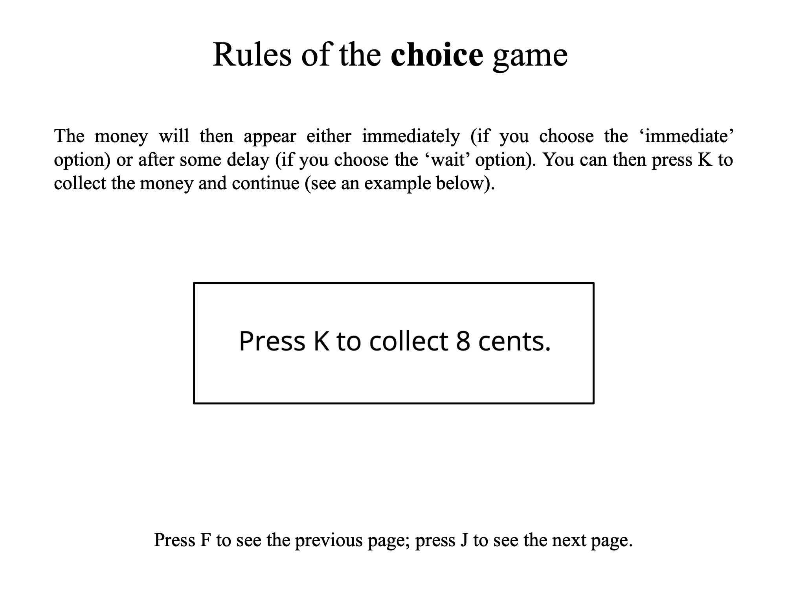</img>',
                '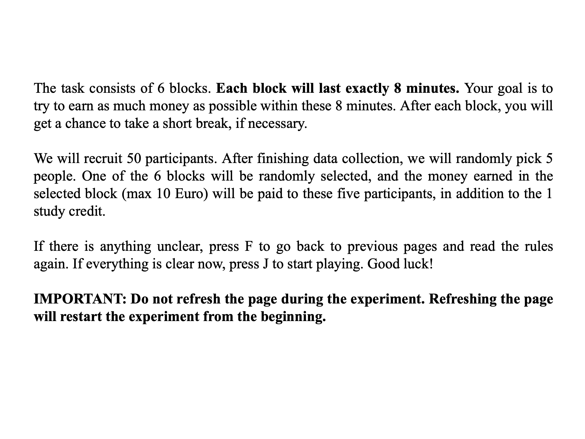</img>'],
        key_forward: 'j',
        key_backward: 'f',
        allow_backward: true,
        on_start: function(){
          // hide mouse cursor
          document.body.style.cursor = 'none';
        }
      };


      var MCQ_instructions = {
        type: 'instructions',
        pages: ['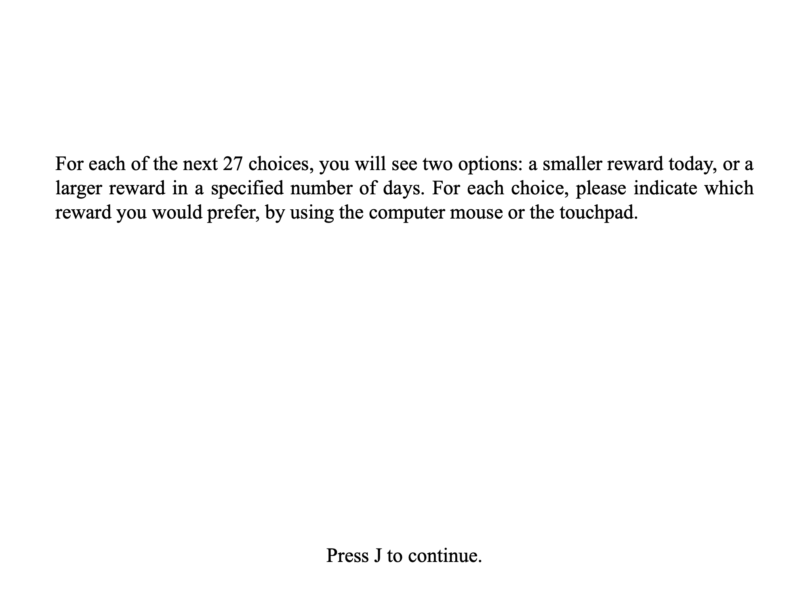</img>'],
        allow_backward: false,
        key_forward: 'j',
        on_start: function(){
          // show mouse cursor
          document.body.style.cursor = 'auto';
        }
      };

      var SAM_instructions = {
        type: 'instructions',
        pages: ['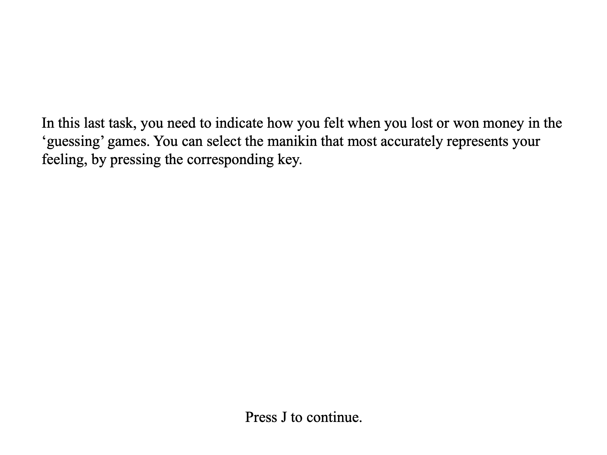</img>'],
        allow_backward: false,
        key_forward: 'j',
        on_start: function(){
          // show mouse cursor
          document.body.style.cursor = 'auto';
        }
      };

      var debrief = {
        type: 'instructions',
        pages: ['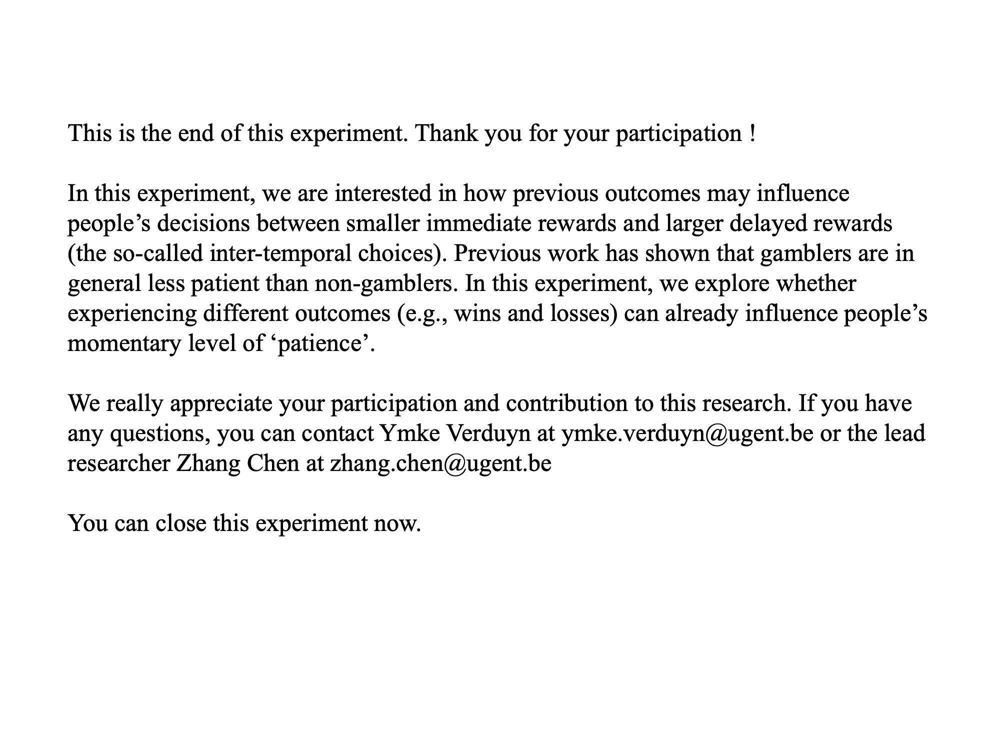</img>'],
        allow_backward: false,
        key_forward: 'j',
        on_start: function(){
          // show mouse cursor
          document.body.style.cursor = 'auto';
        }
      };

      /*********************************************
                Initiate and end a block
      *********************************************/

      // at the beginning of a block, show a blank screen very quickly.
      // the purpose of this screen is to get the 'clock time' at which a block initiates
      var task_initiate = {
        type: 'html-keyboard-response',
        stimulus: ' ',
        choices: jsPsych.NO_KEYS,
        trial_duration: 50,
        on_finish: function(data){

          // hide mouse cursor
          document.body.style.cursor = 'none';

          // increment block number
          block_number ++;

          // reset the current balance
          total_points = 0;

          // register the time at which the task starts
          time_start = data.time_elapsed;
          // based on the start time, determine when the task is supposed to end
          time_end = time_start + total_duration;
          // initially, the remaining duration equals the total duration of the task
          remaining_duration = total_duration;

        }
      }

      // show this message when time is up
      var task_end = {
        type: 'html-keyboard-response',
        stimulus: '<div style="font-size:35px;">Time is up for this block!</div>',
        choices: jsPsych.NO_KEYS,
        trial_duration: 4000,
        on_finish: function(data){
          // record the total amount of winning in the current block
          data.task = 'payoff';
          data.question = 'Block' + block_number;
          data.answer = total_points;
        }
      }

      var block_end = {
        type: 'html-keyboard-response',
        stimulus: '',
        on_start: function(block_end){

          var remaining_block = Nblock - block_number;
          block_end.stimulus =
            '<div style="font-size:30px;">You have finished Block ' + block_number +
            '.<br><br>' + remaining_block + ' blocks left. ' +
            '<br><br> You won ' + total_points + ' cents in this block.' +
            '<br><br>You can take a short break if you want to. Press J to continue.</div>';
        },
        choices: ['j']
      }

      /*********************************************
                   The guessing game
      *********************************************/

      /************* the start screen of the guessing game ************/
      // function to generate the html string for the start screen
      var generate_html_guess_start = function(){

        var html_string = '<div id = "game-area">' +
                          '<div id = "message">Press space to start a <b>guessing</b> game.</div>' +
                          '<div id = "balance"> Total: ' + total_points + ' cents </div>' +
                          '</div>';

        return html_string;

      }

      var guess_start_screen = {
        type: 'html-keyboard-response',
        stimulus: 'none',
        choices: ['space'],
        on_start: function(guess_start_screen){

          // create the stimulus to be preesnted
          guess_start_screen.stimulus = generate_html_guess_start();

          // determine the maximum duration of the screen based on the remaining time
          guess_start_screen.trial_duration = remaining_duration;

          // reset the blur and focus count
          blur_count = 0;
          focus_count = 0;

          // the outcome of the current guess game
          guess_outcome = trials[trial_number].guess_outcome;

          // the wait period for the delayed option in the intertemporal choice game
          delay_time = trials[trial_number].delay_time;

          // the amount of money for the immediate option
          immediate_amount = trials[trial_number].immediate_amount;

          // randomly determine the left/right position of the delayed option
          if (Math.random() < 0.5){
            delay_pos = 'left';

          } else {
            delay_pos = 'right';
          }

          // determine the text message, the type of color card,
          // and the outcome message based on the outcome of the guessing game
          if (guess_outcome === "win" ) {
            guess_text_instruction = 'Blue or Yellow?';
            guess_color_front = "mixed";
            guess_outcome_message = "+ 20 cents";

          } else if (guess_outcome === 'loss') {
            guess_text_instruction = 'Blue or Yellow?';
            guess_color_front = "mixed";
            guess_outcome_message = "- 15 cents";


          } else {
            guess_outcome_message = "0";
            if (Math.random() < 0.5) {
              guess_text_instruction = 'Blue only.';
              guess_color_front = "blue";
            }else{
              guess_text_instruction = 'Yellow only.';
              guess_color_front = "yellow";
            }
          }

          // intially, the two options in the guessing are 'unselected'
          guess_option_states = {f:'unselected', j:'unselected'};

        },
        on_finish: function(data){

          // register how quickly participants start, with the space bar
          guess_startRT = Math.round(data.rt);

          // compute the current time and the remaining duration
          time_now = data.time_elapsed;
          remaining_duration = time_end - time_now;

          // register data
          trial_number ++;
          trial_type = 'guess';
          stage = 'guess_start';
          respRT = Math.round(data.rt);
          respKey = jsPsych.pluginAPI.convertKeyCodeToKeyCharacter(data.key_press);

          data.record_data = true;

        }
      };

      // put the start screen of the guessing game in an if-node
      // the start screen will therefore only be shown if there is still time left.
      // this structure will be the same for all the remaining elements.
      var guess_start_screen_if_node = {
          timeline: [guess_start_screen],
          conditional_function: function(){
            if (remaining_duration > 0){
              return true;
            } else{
              return false;
            }
          }
      }

      /************* the choice screen of the guessing game ************/

      // function to generate the html string as stimulus
      function guess_select_screen_html(){

        var game_html =
          '<div id = "game-area">' +
          '' +
          '<div id="game1_instruction">' + guess_text_instruction+'</div>' +
          '<div class = "F_button unselected"></div>' +
          '<div class = "J_button unselected"></div>' +
          '<div class="flip-color">' +
          '<div id = "color_card" class="flip-color-inner">' +
          '<div class="flip-color-front"></div>' +
          '<div class="flip-color-back"></div>' +
          '</div>' +
          '</div>' +
          '<audio id="flip_audio" src="card_flip.mp3"></audio>' +
          '<div id = "guess_outcome"></div>' +
          '<div id = "balance">Total: ' + total_points + ' cents</div>' +
          '</div>' +
          '</div>' ;

        return game_html;
      };

      var guess_select_screen = {
        type: 'html-keyboard-response',
        stimulus: ' ',
        on_start: function(guess_select_screen){

          // determine the maximum duration of the screen based on the remaining time
          guess_select_screen.trial_duration = remaining_duration;

          // reset the blur and focus count
          blur_count = 0;
          focus_count = 0;

          // generate the html string to be presented
          guess_select_screen.stimulus = guess_select_screen_html();

          // depending on the type of color card, determine which keys are allowed
          if (guess_color_front === 'mixed'){
            guess_select_screen.choices = ['f', 'j'];
          } else if (guess_color_front === 'blue') {
            guess_select_screen.choices = ['f'];
          } else {
            guess_select_screen.choices = ['j'];
          }

        },
        on_finish: function(data){

          // compute the current time and the remaining duration
          time_now = data.time_elapsed;
          remaining_duration = time_end - time_now;

          // register data
          stage = 'guess_choice';
          respRT = Math.round(data.rt);
          respKey = jsPsych.pluginAPI.convertKeyCodeToKeyCharacter(data.key_press);

          data.record_data = true;

          // each option has a state (css class, see the custom.css file in the configurations folder)
          // of either 'selected' or 'unselected'. When 'selected', the option will be surrounded by
          // a green frame to indicate to participants which option (blue or yellow) they have chosen.
          // Here based on which key participants have pressed, we change the corresponding option to 'selected'.
          guess_option_states[respKey] = 'selected';

          // determine which color to eventually show
          if (guess_outcome === 'neutral'){
            if (guess_color_front === 'blue') {
              guess_color_back = 'blue';
            } else {
              guess_color_back = 'yellow';
            }
          } else if (guess_outcome === 'win'){
            if (respKey === 'f'){
              guess_color_back = 'blue';
            } else {
              guess_color_back = 'yellow';
            }
          } else {
            if (respKey === 'f'){
              guess_color_back = 'yellow';
            } else {
              guess_color_back = 'blue';
            }
          }
        }
      }

      // only present if there is still time left
      var guess_select_screen_if_node = {
          timeline: [guess_select_screen],
          conditional_function: function(){
            if (remaining_duration > 0){
              return true;
            } else{
              return false;
            }
          }
      }

      /************* the outcome screen of the guessing game ************/

      // function to turn the card and play a card-flipping sound
      function turnColor() {

        // 50 milliseconds after participants make a choice,
        // turn the color card; the animation lasts 500 ms.
        setTimeout(function(){
          document.getElementById("color_card").classList.add("is-flipped");
          // play audio
          document.getElementById("flip_audio").play();
        }, 50);

        // after the card is flipped, show the outcome in text
        setTimeout(function(){

          document.getElementById("guess_outcome").textContent = guess_outcome_message;

          // update the total amount
          if (guess_outcome === 'win') {
            total_points = total_points + 20;
          } else if (guess_outcome === 'loss') {
            total_points = total_points - 15;
          }

          document.getElementById("balance").textContent = 'Total: ' + total_points +' cents';

        }, 550);
      }

      // function to generate a html string as a stimulus
      function guess_outcome_screen_html(){

        var game_html =
          '<div id = "game-area">' +
          '' +
          '<div id="game1_instruction">' + guess_text_instruction+'</div>' +
          '<div class = "F_button ' + guess_option_states['f'] + '"></div>' +
          '<div class = "J_button ' + guess_option_states['j']+'"></div>' +
          '<div class="flip-color">' +
          '<div id = "color_card" class="flip-color-inner">' +
          '<div class="flip-color-front"></div>' +
          '<div class="flip-color-back"></div>' +
          '</div>' +
          '</div>' +
          '<audio id="flip_audio" src="card_flip.mp3"></audio>' +
          '<div id = "guess_outcome"></div>' +
          '<div id = "balance">Total: ' + total_points +' cents</div>' +
          '</div>' +
          '</div>' ;

        return game_html;
      };


      // the outcome phase of the guessing game lasts 1550 milliseconds in total
      // or for as long as there is still time left
      var guess_outcome_screen = {
        type: 'html-keyboard-response',
        stimulus: 'placeholder',
        on_start: function(guess_outcome_screen){

          // present the outcome for 1550 ms, or shorter if there is less than 1550 ms left
          guess_outcome_screen.trial_duration = Math.min(remaining_duration, 1550);

          // reset the blur and focus count
          blur_count = 0;
          focus_count = 0;

          // generate the stimulus
          guess_outcome_screen.stimulus = guess_outcome_screen_html();
        },
        choices: jsPsych.NO_KEYS,
        on_finish: function(data){
          // compute the current time and the remaining duration
          time_now = data.time_elapsed;
          remaining_duration = time_end - time_now;

          // register data
          stage = 'guess_outcome';
          respRT = 0;
          respKey = 'undefined';

          data.record_data = true;
        }
      }

      // only present this if there is still time left
      var guess_outcome_screen_if_node = {
          timeline: [guess_outcome_screen],
          conditional_function: function(){
            if (remaining_duration > 0){
              return true;
            } else{
              return false;
            }
          }
      }

      /*********************************************
                  The intertemporal choice (ITC)
      *********************************************/

      /************* the start screen of the ITC task ************/
      // function to generate the html string for the start screen
      var generate_html_IT_start = function(){

        var html_string = '<div id = "game-area">' +
                          '<div id = "message">Press space to start a <b>choice</b> game.</div>' +
                          '<div id = "balance"> Total: ' + total_points + ' cents </div>' +
                          '</div>';

        return html_string;

      }

      var IT_start_screen = {
        type: 'html-keyboard-response',
        stimulus: 'none',
        choices: ['space'],
        on_start: function(IT_start_screen){
          // generate the stimulus
          IT_start_screen.stimulus = generate_html_IT_start();

          // the trial duration cannot exceed the remaining time
          IT_start_screen.trial_duration = remaining_duration;

          // reset the blur and focus count
          blur_count = 0;
          focus_count = 0;

        },
        on_finish: function(data){

          // compute the current time and the remaining duration
          time_now = data.time_elapsed;
          remaining_duration = time_end - time_now;

          // register data
          trial_type = 'ITC';
          stage = 'ITC_start';
          respRT = Math.round(data.rt);
          respKey = jsPsych.pluginAPI.convertKeyCodeToKeyCharacter(data.key_press);

          data.record_data = true;
        }
      }

      // only present this if there is still time left
      var IT_start_screen_if_node = {
          timeline: [IT_start_screen],
          conditional_function: function(){
            if (remaining_duration > 0){
              return true;
            } else{
              return false;
            }
          }
      }

      /************* the choice screen of the ITC task ************/

      // function to generate the html string for a intertemporal choice
      generate_html_ITC = function(left_amount_tmp, left_time_tmp, right_amount_tmp, right_time_tmp){
        // left_amount_tmp: the amount of money for the left option
        // left_time_tmp: the time one needs to wait for the left option
        // right_amount_tmp: the amount of money for the right option
        // right_time_tmp: the time one needs to wait for the right option

        // initiate a new variable to save the generated html string
        var html_string = '';

        // add the html string for the overall choice interface
        html_string = html_string + '<div id = "game-area">';

        // add the html string for the left option
        if (left_time_tmp == 0){
          html_string = html_string + '<div class = "IT-option" id = "IT-option-left" >' + left_amount_tmp + ' cents <br>now</div>';
        } else{
          html_string = html_string + '<div class = "IT-option" id = "IT-option-left" >' + left_amount_tmp + ' cents <br>in ' + left_time_tmp + ' seconds</div>';
        }

        // add the html string for the right option
        if (right_time_tmp == 0){
          html_string = html_string + '<div class = "IT-option" id = "IT-option-right" >' + right_amount_tmp + ' cents <br>now</div>';
        } else{
          html_string = html_string + '<div class = "IT-option" id = "IT-option-right" >' + right_amount_tmp + ' cents <br>in ' + right_time_tmp + ' seconds</div>';
        }

        // add the html string for the F and J keys
        html_string = html_string +
                      '<div id = "IT-F-option">F</div>' +
                      '<div id = "IT-J-option">J</div>';

        // add the total balance so far
        html_string = html_string + '<div id = "balance"> Total: ' + total_points + ' cents </div>';

        // add the closing div tag
        html_string = html_string + '</div>';

        // return the generated html string
        return(html_string);

      }


      /* intertemporal choice screen */
      var IT_choice_screen = {
        type: "html-keyboard-response",
        stimulus: 'test test',
        on_start: function(IT_choice_screen){

          // determine the maximum duration
          IT_choice_screen.trial_duration = remaining_duration;

          // reset the blur and focus count
          blur_count = 0;
          focus_count = 0;

          // randomly determine the left/right position of the delayed option.
          // base on where the delayed option is positioned,
          // determine the time and amount for the left/right position
          if (delay_pos == 'left'){
            left_time = delay_time;
            left_amount = 20;

            right_time = 0;
            right_amount = immediate_amount;

          } else {
            left_time = 0;
            left_amount = immediate_amount;

            right_time = delay_time;
            right_amount = 20;

          }

          // based on the amount and time, create the html string
          var current_html = generate_html_ITC(left_amount, left_time, right_amount, right_time);
          IT_choice_screen.stimulus = current_html;
        },
        choices: ['f', 'j'],
        on_finish: function(data){

          // compute the current time and the remaining duration
          time_now = data.time_elapsed;
          remaining_duration = time_end - time_now;

          // register data
          stage = 'ITC_choice';
          respRT = Math.round(data.rt);
          respKey = jsPsych.pluginAPI.convertKeyCodeToKeyCharacter(data.key_press);

          data.record_data = true;

          if (respKey === 'f'){
            chosen_wait_time = left_time * 1000;
            chosen_amount = left_amount;
          } else if (respKey === 'j'){
            chosen_wait_time = right_time * 1000;
            chosen_amount = right_amount;
          }
        }
      };

      // only present this if there is time left
      var IT_choice_screen_if_node = {
          timeline: [IT_choice_screen],
          conditional_function: function(){
            if (remaining_duration > 0){
              return true;
            } else{
              return false;
            }
          }
      }

     /************* the wait screen of the ITC task ************/

     // function to generate the html string for the wait screen
     var generate_html_IT_wait = function(){

       if (chosen_wait_time === 0) {
         var html_string = '<div id = "game-area">' +
                           '<div id = "message"></div>' +
                           '<div id = "balance"> Total: ' + total_points + ' cents </div>' +
                           '</div>';
       } else{
         var html_string = '<div id = "game-area">' +
                           '<div id = "message">Please wait...</div>' +
                           '<div id = "balance"> Total: ' + total_points + ' cents </div>' +
                           '</div>';
       }

       return html_string;

     }

     var IT_wait_screen = {
       type: 'html-keyboard-response',
       stimulus: '',
       choices: jsPsych.NO_KEYS,
       on_start: function(IT_wait_screen){

         // reset the blur and focus count
         blur_count = 0;
         focus_count = 0;

         // if a participant chooses the immediate option,
         // the wait screen will show nothing.
         // if a participant chooses the delayed option,
         // the wait screen will present 'Please wait...'
         IT_wait_screen.stimulus = generate_html_IT_wait();

         // based on the choice, determine the wait duration
         // note again that the wait duration cannot exceed the remaining time
         IT_wait_screen.trial_duration = Math.min(chosen_wait_time, remaining_duration);
       },
       on_finish: function(data){
         // compute the current time and the remaining duration
         time_now = data.time_elapsed;
         remaining_duration = time_end - time_now;

         // register data
         trial_type = 'ITC';
         stage = 'ITC_wait';
         respRT = 0;
         respKey = 'undefined';

         data.record_data = true;
       }
     }

     // only present it if there is time left
     var IT_wait_screen_if_node = {
         timeline: [IT_wait_screen],
         conditional_function: function(){
           if (remaining_duration > 0){
             return true;
           } else{
             return false;
           }
         }
     }

     /************* the reward collection screen of the ITC task ************/

     // function to generate the html string for the collect screen
     var generate_html_IT_collect = function(){

       var html_string = '<div id = "game-area">' +
                         '<div id = "message">Press K to collect ' + chosen_amount + ' cents.</div>' +
                         '<div id = "balance"> Total: ' + total_points + ' cents </div>' +
                         '</div>';

       return html_string;

     }

     var IT_collect_screen = {
       type: 'html-keyboard-response',
       stimulus: '',
       choices: ['k'],
       on_start: function(IT_collect_screen){

         // reset the blur and focus count
         blur_count = 0;
         focus_count = 0;

         // define the stimulus
         IT_collect_screen.stimulus = generate_html_IT_collect();

         // determine the maximum duration
         IT_collect_screen.trial_duration = remaining_duration;
       },
       on_finish: function(data){

         // compute the current time and the remaining duration
         time_now = data.time_elapsed;
         remaining_duration = time_end - time_now;

         // register data
         stage = 'ITC_collect';
         respRT = Math.round(data.rt);
         respKey = jsPsych.pluginAPI.convertKeyCodeToKeyCharacter(data.key_press);

         data.record_data = true;

       }
     }

     // only present this if there is time left
     var IT_collect_screen_if_node = {
         timeline: [IT_collect_screen],
         conditional_function: function(){
           if (remaining_duration > 0){
             return true;
           } else{
             return false;
           }
         }
     }

     /************* the outcome screen of the ITC task ************/

     // function to play sound
     function playSound() {

       // 50 milliseconds after participants collect the reward, play the winning sound
       setTimeout(function(){
         // play audio
         document.getElementById("win_sound").play();

         // update the total amount
         total_points = total_points + chosen_amount;

         document.getElementById("balance").textContent = 'Total: ' + total_points +' cents';

       }, 50);

     }

     // function to generate the html string for the outcome screen
     var generate_html_IT_outcome = function(){

       var html_string = '<div id = "game-area">' +
                         '' +
                         '<div id = "message">+ ' + chosen_amount + ' cents.</div>' +
                         '<div id = "balance"> Total: ' + total_points + ' cents </div>' +
                         '<audio id="win_sound" src="cash_sound.wav"></audio>' +
                         '</div>';

       return html_string;

     }


     var IT_outcome_screen = {
       type: 'html-keyboard-response',
       stimulus: '',
       choices: jsPsych.NO_KEYS,
       on_start: function(IT_outcome_screen){

         // reset the blur and focus count
         blur_count = 0;
         focus_count = 0;

         // define the stimulus
         IT_outcome_screen.stimulus = generate_html_IT_outcome();

         // define the stimulus duration
         IT_outcome_screen.trial_duration = Math.min(remaining_duration, 1000);

       },
       on_finish: function(data){
         // compute the current time and the remaining duration
         time_now = data.time_elapsed;
         remaining_duration = time_end - time_now;

         // register data
         stage = 'ITC_outcome';
         respRT = 0;
         respKey = 'undefined';

         data.record_data = true;
       }
     }

     // only present it if there is time left
     var IT_outcome_screen_if_node = {
         timeline: [IT_outcome_screen],
         conditional_function: function(){
           if (remaining_duration > 0){
             return true;
           } else{
             return false;
           }
         }
     }

     /*********************************************
                Put all trials in a while loop
     *********************************************/

     // a loop that runs the task as long as there is time left
     var fixed_duration_node = {
         timeline: [guess_start_screen_if_node,
                    guess_select_screen_if_node,
                    guess_outcome_screen_if_node,
                    IT_start_screen_if_node,
                    IT_choice_screen_if_node,
                    IT_wait_screen_if_node,
                    IT_collect_screen_if_node,
                    IT_outcome_screen_if_node],
         loop_function: function(data){
             if(remaining_duration > 0){
                 return true;
             } else {
                 return false;
             }
         }
     }

     /*********************************************
              The Monetary Choice Questionnaire
     *********************************************/

     // all 27 items in the MCQ
     var MCQ_items = [
         {number:1,
          question: 'Would you prefer €54 today, or €55 in 117 days?',
          now: '€54 today',
          delayed: '€55 in 117 days'},
         {number:2,
          question: 'Would you prefer €55 today, or €75 in 61 days?',
          now: '€55 today',
          delayed: '€75 in 61 days'},
         {number:3,
          question: 'Would you prefer €19 today, or €25 in 53 days?',
          now: '€19 today',
          delayed: '€25 in 53 days'},
         {number:4,
          question: 'Would you prefer €31 today, or €85 in 7 days?',
          now: '€31 today',
          delayed: '€85 in 7 days'},
         {number:5,
          question: 'Would you prefer €14 today, or €25 in 19 days?',
          now: '€14 today',
          delayed: '€25 in 19 days'},
         {number:6,
          question: 'Would you prefer €47 today, or €50 in 160 days?',
          now: '€47 today',
          delayed: '€50 in 160 days'},
         {number:7,
          question: 'Would you prefer €15 today, or €35 in 13 days?',
          now: '€15 today',
          delayed: '€35 in 13 days'},
         {number:8,
          question: 'Would you prefer €25 today, or €60 in 14 days?',
          now: '€25 today',
          delayed: '€60 in 14 days'},
         {number:9,
          question: 'Would you prefer €78 today, or €80 in 162 days?',
          now: '€78 today',
          delayed: '€80 in 14 days'},
         {number:10,
          question: 'Would you prefer €40 today, or €55 in 62 days?',
          now: '€40 today',
          delayed: '€55 in 62 days'},
         {number:11,
          question: 'Would you prefer €11 today, or €30 in 7 days?',
          now: '€11 today',
          delayed: '€30 in 7 days'},
         {number:12,
          question: 'Would you prefer €67 today, or €75 in 119 days?',
          now: '€67 today',
          delayed: '€75 in 119 days'},
         {number:13,
          question: 'Would you prefer €34 today, or €35 in 186 days?',
          now: '€34 today',
          delayed: '€35 in 186 days'},
         {number:14,
          question: 'Would you prefer €27 today, or €50 in 21 days?',
          now: '€27 today',
          delayed: '€50 in 21 days'},
         {number:15,
          question: 'Would you prefer €69 today, or €85 in 91 days?',
          now: '€69 today',
          delayed: '€85 in 91 days'},
         {number:16,
          question: 'Would you prefer €49 today, or €60 in 89 days?',
          now: '€49 today',
          delayed: '€60 in 89 days'},
         {number:17,
          question: 'Would you prefer €80 today, or €85 in 157 days?',
          now: '€80 today',
          delayed: '€85 in 157 days'},
         {number:18,
          question: 'Would you prefer €24 today, or €35 in 29 days?',
          now: '€24 today',
          delayed: '€35 in 29 days'},
         {number:19,
          question: 'Would you prefer €33 today, or €80 in 14 days?',
          now: '€33 today',
          delayed: '€80 in 14 days'},
         {number:20,
          question: 'Would you prefer €28 today, or €30 in 179 days?',
          now: '€28 today',
          delayed: '€30 in 179 days'},
         {number:21,
          question: 'Would you prefer €34 today, or €50 in 30 days?',
          now: '€34 today',
          delayed: '€50 in 30 days'},
         {number:22,
          question: 'Would you prefer €25 today, or €30 in 80 days?',
          now: '€25 today',
          delayed: '€30 in 80 days'},
         {number:23,
          question: 'Would you prefer €41 today, or €75 in 20 days?',
          now: '€41 today',
          delayed: '€75 in 20 days'},
         {number:24,
          question: 'Would you prefer €54 today, or €60 in 111 days?',
          now: '€54 today',
          delayed: '€60 in 111 days'},
         {number:25,
          question: 'Would you prefer €54 today, or €80 in 30 days?',
          now: '€54 today',
          delayed: '€80 in 30 days'},
         {number:26,
          question: 'Would you prefer €22 today, or €25 in 136 days?',
          now: '€22 today',
          delayed: '€25 in 136 days'},
        {number:27,
          question: 'Would you prefer €20 today, or €55 in 7 days?',
          now: '€20 today',
          delayed: '€55 in 7 days'},
     ]

     // global varaible for question number, question, and the two options
     var MCQ_number, MCQ_question, MCQ_now, MCQ_delayed;

     // to present the MCQ items one by one
     var MCQ_question_screen = {
       type: 'survey-multi-choice',
       questions: [{
           prompt: 'placeholder',
           options: ['placeholder', 'placeholder'],
           required: true,
           horizontal: true
         }],
       on_start: function(MCQ_question_screen){

         // show mouse cursor
         document.body.style.cursor = 'auto';

         // on the start of each item, adjust the question and two options
         MCQ_number = jsPsych.timelineVariable('number', true);
         MCQ_question = jsPsych.timelineVariable('question', true);
         MCQ_now =  jsPsych.timelineVariable('now', true);
         MCQ_delayed =  jsPsych.timelineVariable('delayed', true);

         MCQ_question_screen.questions = [{
           prompt: MCQ_question,
           name: 'selected',
           options: [MCQ_now, MCQ_delayed],
           required: true
         }]
       },
       on_finish: function(data) {
         // after each item, get the selected option
         var responses = JSON.parse(data.responses);
         var selected = responses.selected;

         // based on the selected option, see if participants choose to wait
         if (selected == MCQ_now){
           var choice = 'now';
         }

         if (selected == MCQ_delayed){
           var choice = 'wait';
         }

         // register data
         data.task = 'MCQ';
         data.number = MCQ_number;
         data.now = MCQ_now;
         data.delayed = MCQ_delayed;
         data.selected = selected;
         data.choice = choice;

       }
     }

     var MCQ_procedure = {
       timeline: [MCQ_question_screen],
       timeline_variables: MCQ_items
     }

     /*********************************************
               The Self-Assessment Manikin
     *********************************************/

     var SAM_win_instruction = {
        type: "html-keyboard-response",
        stimulus: "<p>You are almost at the end of the experiment!</p><p> In what follows you'll have to indicate how you felt when you guess the color of the card <b>correctly and won money</b></p><p> press any key to begin.</p>"
      };

     var SAM_win1 = {
         type: "html-keyboard-response",
         stimulus: "<p> Choose the picture that reflected best how you felt when you guessed the card color <b>correctly and won money</b>.</p>" +
         "<div style='float: center;'>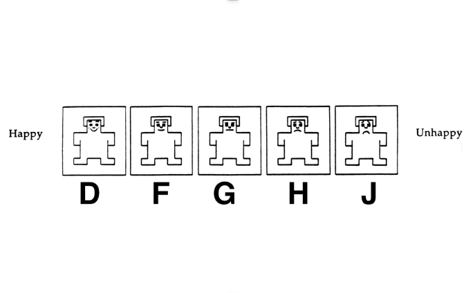</img>",
         choices: ['d', 'f', 'g', 'h', 'j'],
         prompt: 'Press the corresponding key to select a picture.',
         on_finish: function(data){

           data.task = 'SAM';
           data.outcome = 'win';
           data.question = 'valence';
           data.resp = jsPsych.pluginAPI.convertKeyCodeToKeyCharacter(data.key_press);
           data.rt = Math.round(data.rt);
         }
       };

     var SAM_win2 = {
         type: "html-keyboard-response",
         stimulus: "Choose the picture that reflected best how you felt when you guessed the card color <b>correctly and won money</b>.</p>" +
         "<div style='float: center;'>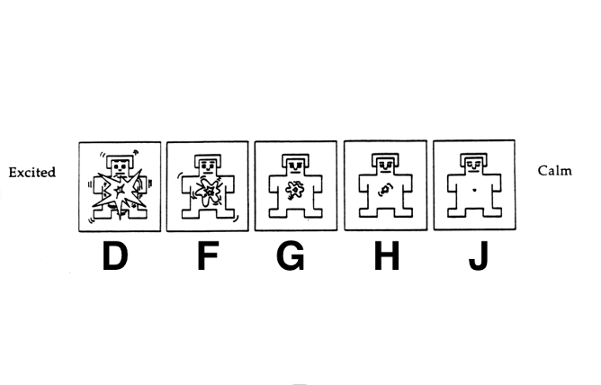</img>",
         choices: ['d', 'f', 'g', 'h', 'j'],
         prompt: 'Press the corresponding key to select a picture.',
         on_finish: function(data){

           data.task = 'SAM';
           data.outcome = 'win';
           data.question = 'arousal';
           data.resp = jsPsych.pluginAPI.convertKeyCodeToKeyCharacter(data.key_press);
           data.rt = Math.round(data.rt);
         }
       };

     var SAM_win3 = {
         type: "html-keyboard-response",
         stimulus: "Choose the picture that reflected best how you felt when you guessed the card color <b>correctly and won money</b>.</p>" +
         "<div style='float: center;'>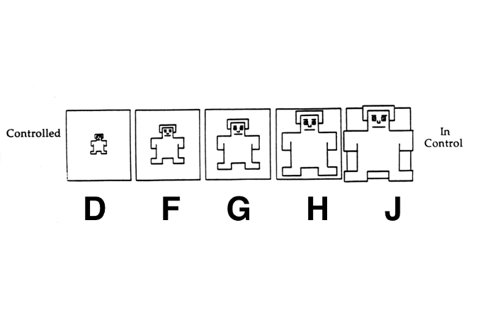</img>",
         choices: ['d', 'f', 'g', 'h', 'j'],
         prompt: 'Press the corresponding key to select a picture.',
         on_finish: function(data){

           data.task = 'SAM';
           data.outcome = 'win';
           data.question = 'control';
           data.resp = jsPsych.pluginAPI.convertKeyCodeToKeyCharacter(data.key_press);
           data.rt = Math.round(data.rt);
         }
       };

     var SAM_loss_instruction = {
         type: "html-keyboard-response",
         stimulus: "<p>In what follows you'll have to indicate how you felt when you guess the color of the card <b>incorrectly and lost money</b></p><p> press any key to begin.</p>"
       };


     var SAM_loss1 = {
         type: "html-keyboard-response",
         stimulus: "Choose the picture that reflected best how you felt when you guessed the card color <b>incorrectly and lost money</b>.</p>" +
         "<div style='float: center;'></img>",
         choices: ['d', 'f', 'g', 'h', 'j'],
         prompt: 'Press the corresponding key to select a picture.',
         on_finish: function(data){

           data.task = 'SAM';
           data.outcome = 'loss';
           data.question = 'valence';
           data.resp = jsPsych.pluginAPI.convertKeyCodeToKeyCharacter(data.key_press);
           data.rt = Math.round(data.rt);
         }
       };

     var SAM_loss2 = {
         type: "html-keyboard-response",
         stimulus: "<p>Choose the picture that reflected best how you felt when you guessed the card color <b>incorrectly and lost money</b>.</p>" +
         "<div style='float: center;'></img>",
         choices: ['d', 'f', 'g', 'h', 'j'],
         prompt: 'Press the corresponding key to select a picture.',
         on_finish: function(data){

           data.task = 'SAM';
           data.outcome = 'loss';
           data.question = 'arousal';
           data.resp = jsPsych.pluginAPI.convertKeyCodeToKeyCharacter(data.key_press);
           data.rt = Math.round(data.rt);
         }
       };

     var SAM_loss3 = {
         type: "html-keyboard-response",
         stimulus: "Choose the picture that reflected best how you felt when you guessed the card color <b>incorrectly and lost money</b>.</p>" +
         "<div style='float: center;'></img>",
         choices: ['d', 'f', 'g', 'h', 'j'],
         prompt: 'Press the corresponding key to select a picture.',
         on_finish: function(data){

           data.task = 'SAM';
           data.outcome = 'loss';
           data.question = 'control';
           data.resp = jsPsych.pluginAPI.convertKeyCodeToKeyCharacter(data.key_press);
           data.rt = Math.round(data.rt);
         }
       };

    var SAM_items = [SAM_win_instruction, SAM_win1, SAM_win2, SAM_win3, SAM_loss_instruction, SAM_loss1, SAM_loss2, SAM_loss3];

    /*********************************************
           Ask for email address
    *********************************************/
    var email_screen = {
      type: 'survey-text',
      questions: [{prompt: 'We will randomly pick 5 participants. <br>For these five participants, one block will be randomly chosen, <br>and the money earned in the selected block (max 10 Euro) will be sent via bank transfer. <br> If you wish to take part in this, enter your email below.', required: false, name: 'email'}],
      on_finish: function(data) {

        // we register email during data collection to contact the winner
        // to give them the extra bonus. These files will be immediately deleted
        // after finishing data collection.

        // get the email address of participants
        var responses = JSON.parse(data.responses);
        var email = responses.email;

        // register data
        data.task = 'payoff';
        data.question = 'email';
        data.answer = email;
      }
    };

    /*********************************************
                Put everything into the timeline
    *********************************************/

    timeline.push(...consent_demo);

    timeline.push(game_instructions);

    for (var i = 0; i < Nblock; i++) {

      // blocks with a fixed duration
      var fixed_duration_block = {
        timeline: [fixed_duration_node]
      };

      timeline.push(task_initiate, fixed_duration_block, task_end);

      if (i < Nblock-1) {
        timeline.push(block_end);
      }
    }

    timeline.push(MCQ_instructions);
    timeline.push(MCQ_procedure);

    timeline.push(SAM_instructions);
    timeline.push(...SAM_items);

    timeline.push(email_screen);

    timeline.push(debrief);

    /*********************************************
                Run the experiment
    *********************************************/

    // function that appends data to an existing file (or creates the file if it does not exist)
    function appendData(filename, filedata) {

       $.ajax({ // make sure jquery-1.7.1.min.js is loaded in the html header for this to work
         type: 'post',
         cache: false,
         url: 'php/save_data_append.php', // IMPORTANT: change the php script to link to the directory of your server where you want to store the data!
         data: {
           filename: filename,
           filedata: filedata
         },
       });
    };

    jsPsych.init({
       timeline: timeline,
       preload_images: all_images,
       preload_audio: all_audios,
       exclusions: {
         min_width: 1000,
         min_height: 600
       },
       // each time when participants exit or enter the current page
       // increase the counters
       on_interaction_data_update: function(data){
         if (data.event === 'focus'){
           focus_count ++;
         }
         if (data.event === 'blur') {
           blur_count ++;
         }
       },
       on_data_update: function(data){
       if (online){
         var subjID = jsPsych.data.get().last(1).values()[0]['prolific_ID']; // get prolific ID
         if (data.trial_index == 3){

           // write header for the main data file
           var data_row = "prolific_ID, age, gender, nationality, " +
                          "block_number, trial_number, trial_type, guess_outcome, delay_time, delay_pos, immediate_amount," +
                          "stage, respRT, respKey, blur_count, focus_count," +
                          "total_points, remaining_duration, time_elapsed\n";

           appendData('Gambling_ITC_main_'+ subjID +'.csv', data_row);

           // write header for the data file containing MCQ data
           var data_row = "prolific_ID, task, number, now, delayed, selected, choice, rt, time_elapsed\n";
           appendData('Gambling_ITC_MCQ_'+ subjID +'.csv', data_row);

           // write header for the data file containing SAM data
           var data_row = "prolific_ID, task, outcome, question, resp, rt\n";
           appendData('Gambling_ITC_SAM_'+ subjID +'.csv', data_row);

           // write header for the file containing the total amounts in each block and the email address
           var data_row = "prolific_ID, question, answer\n";
           appendData('Gambling_ITC_payoff_'+ subjID +'.csv', data_row);


         }

         // append main data from the task
         if (data.record_data){
           var data_row = data.prolific_ID + ',' + data.age + ',' + data.gender + ',' + data.nationality + ',' +
                          block_number + ',' + trial_number + ',' + trial_type + ',' + guess_outcome + ',' +
                          delay_time + ',' + delay_pos + ',' + immediate_amount + ',' +
                          stage + ',' + respRT + ',' + respKey + ',' + blur_count + ',' +  focus_count + ',' +
                          total_points + ',' + remaining_duration + ',' + data.time_elapsed + '\n';

           appendData('Gambling_ITC_main_'+ subjID +'.csv', data_row);
         }

         // append MCQ data
         if (data.task === 'MCQ'){
           var data_row = data.prolific_ID + ',' + data.task + ',' + data.number + ',' + data.now + ','
                          + data.delayed + ',' + data.selected + ',' + data.choice + ',' + Math.round(data.rt) + ',' + data.time_elapsed +  '\n';
           appendData('Gambling_ITC_MCQ_'+ subjID +'.csv', data_row);
         }

         // append SAM data
         if (data.task === 'SAM'){
           var data_row = data.prolific_ID + ',' + data.task + ',' + data.outcome + ',' + data.question + ',' +  data.resp + ',' + data.rt + '\n';
           appendData('Gambling_ITC_SAM_'+ subjID +'.csv', data_row);
         }

         // append payoff and email address
         if (data.task === 'payoff'){
           // write header for the file containing the total amounts in each block and the email address
           var data_row = data.prolific_ID + ',' + data.question + ',' + data.answer + '\n';
           appendData('Gambling_ITC_payoff_'+ subjID +'.csv', data_row);
         }

       }
     },
     on_finish: function() { //if not online it will save all data locally
         if (!online){
           jsPsych.data.get().localSave('csv','mydata.csv');
         }
     }
     })


    </script>
</html>
